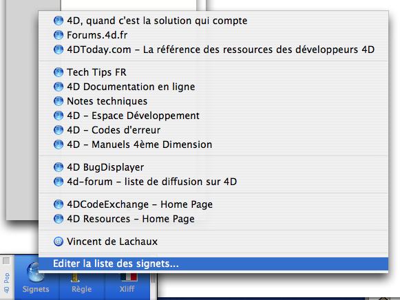
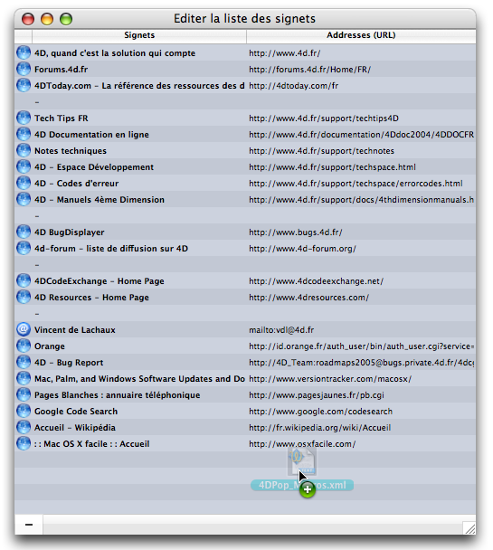

4DPop |
|
|
|
||||
4DPop Bookmarks gère vos signets (et un peu plus) depuis votre environement de développement.
Placer le dossier "4DPop_Bookmarks.4dbase" ou un alias de ce dossier dans le dossier "Components" à côté de la structure de votre base de donnée.
Si vous utilisez le composant "4DPop", l'outil "Signets" apparaît automatiquement dans la palette d'outils, il suffit de cliquer dessus pour l'utiliser.
4DPop Bookmarks affiche un menu construit à partir d'une liste de signets.
Une liste est proposée par défaut mais vous aller pouvoir construire la vôtre.

La sélection d'un item de ce menu lance l'action appropriée au type de raccourci.
La liste de signets par défaut peut être éditée en sélectionnant la dernière ligne du menu "Editer la liste des signets..."

L'ajout de signets peut se faire par glissé-déposé depuis le bureau (Fichier, dossier ou disque), depuis votre navigateur (adresse mail et url) ou une zone de texte.
L'élément glissé est analysé et la ligne créée renseigne automatiquement son type en lui associant une icône spécifique.
Vous pouvez éditer le titre du signet ou son url en double-cliquant sur la partie à modifier, réordonner les lignes par glissé-déposé, trier par les entêtes de colonne.
Il est possible de supprimer une entrée en la sélectionant puis en cliquant sur le bouton"-" (raccourci "suppr").
Un signet dont le nom commence par un trait d'union ("-") sera affiché comme une ligne séparatrice dans le menu.
Note : Il est également possible de déposer un élement pour l'inclure dans la liste des raccourcis en déposant simplement celui-ci sur le bouton "Signet" de la palette 4DPop.
Ce composant est fourni en version compilée, mais vous trouverez le code source dans le dossier "Sources" à l'intérieur du dossier du composant.
Un forum pour 4DPop est disponible à cette adresse : Forum 4DPop